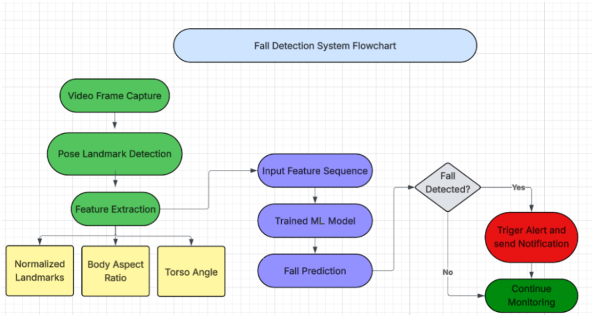

A real-time computer vision system that watches a webcam feed, tracks human pose, and automatically emails a caregiver the moment it detects a fall — no wearable device required.
Most fall-alert systems on the market rely on wearable devices that have to be worn constantly and, in many cases, manually triggered after a fall happens — a real problem if the person isn't wearing the device or is physically unable to activate it once they're hurt. This project explores a camera-based alternative: could computer vision and machine learning detect a fall automatically, without asking anything of the person wearing anything at all?
Rather than analyzing raw video pixels, the system tracks human pose landmarks extracted by MediaPipe — a much smaller, more efficient signal that still carries everything needed to recognize a fall. Those landmarks feed a custom-trained PyTorch neural network that classifies the motion in real time, entirely on a standard CPU.
A live webcam feed is captured and read frame-by-frame using OpenCV.
MediaPipe extracts human body landmarks from each frame.
Landmarks are converted into normalized coordinates centered on the hips, plus derived features like body aspect ratio and torso angle relative to the ground, tracked across several consecutive frames to capture motion.
The feature sequence is passed through a trained neural network that predicts whether a fall is occurring.
A sustained fall prediction automatically triggers an email notification to a caregiver or emergency contact.
Getting to 95.24% accuracy took real iteration. I built a custom dataset by scraping and labelling fall and non-fall video footage, then compared several model configurations against each other — one and two hidden-layer architectures, 16- and 32-unit layers, SGD versus Adam optimizers, and binary cross-entropy versus mean absolute error loss — before settling on the strongest combination. Because the model works from compact pose landmarks instead of raw pixels, it stays light enough to run in real time on ordinary hardware, with no GPU needed.

The dataset could grow to cover a wider range of fall scenarios and reduce overfitting. On the modelling side, I'm interested in testing sequence-aware architectures like LSTMs or transformers instead of frame-window features, and eventually adding mobile or cloud-based alerting and a secondary, voice-based detection trigger.